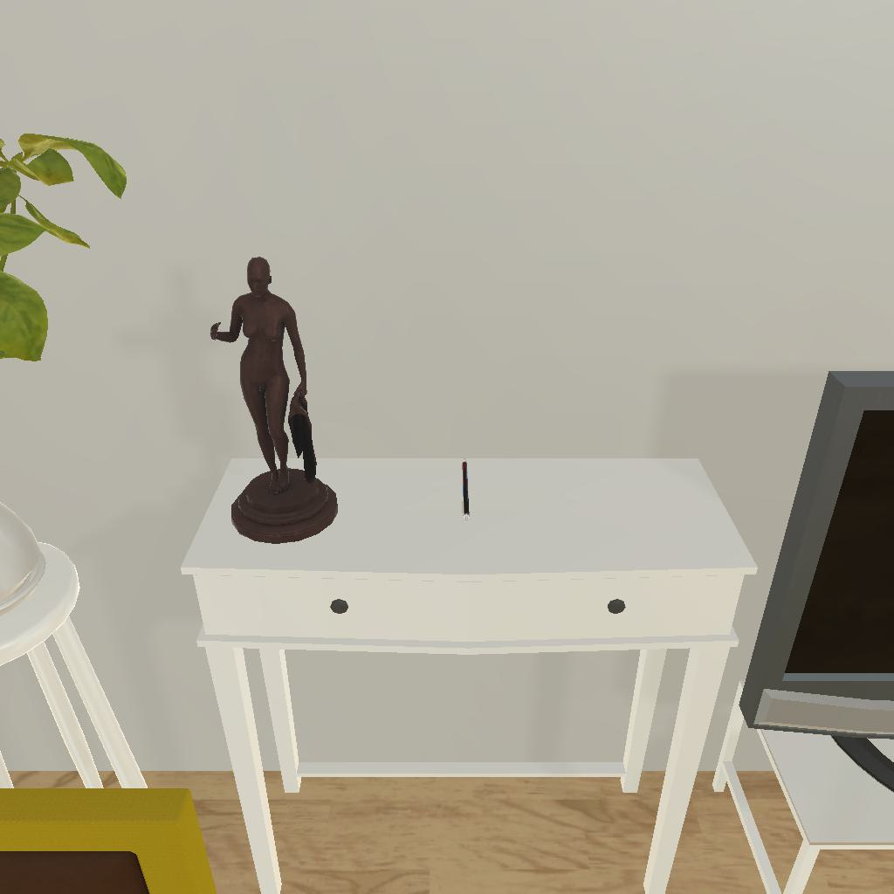

---------------------------------------------------------task: 4---------------------------------------------------------
--------------------------------------------------------------------------------------------------------------------------------------------------------------------
--------------------------------------------------------------------------------------------------------------------------------------------------------------------
Step:--------------------------------------------------------------------------4-------------------------------------------------------------------------------
----------------------------------------
VLM Prompt:
Image1:
Image2:
Image3:
**Instruction**
1. Analyze the provided images to identify all visible household objects and compare the difference between images (e.h. whether the object is opened or not and taken on hand or not), focusing on those relevant to the task description "examine the statue with the floorlamp."
2. Use the analysis of images and the task hint "The agent must find an object of the desired type, locate and turn on a light source with the desired object in-hand." to answer the question: what is the most reasonable action in the choices for the task description "examine the statue with the floorlamp"?
3. Decide and write the answer using the template: The answer is: (i): , where i is the real number. If there is no desired object in images, search every place based on **Initial Observation** to find the object. And if no one is exactly correct, choose a similar answer.
**Initial Observation**
You are in the middle of a room. Looking quickly around you, you can see armchair (1), coffeetable (1-2), sidetable (1), garbagecan (1), drawer (1), sofa (1), diningtable (1)
**Answer Choices**
(1): go to armchair 1
(2): go to coffeetable 1
(3): go to sidetable 1
(4): go to garbagecan 1
(5): go to sofa 1
(6): go to coffeetable 2
(7): go to diningtable 1
(8): open drawer 1
(9): close drawer 1
(10): examine drawer 1
**Answer**
Let's think step by step by following the instructions.
----------------------------------------
----------------------------------------
Original Response:
1. Analyzing the provided images, we can see a statue placed on top of a desk or table. In addition, there is a pen on the table. No other household objects are visible in the images. There is no visible floor lamp in any of the images. There is no difference between the images; all objects remain the same.
2. Based on the task description to "examine the statue with the floorlamp," the agent must first locate the floorlamp. Since the floorlamp is not visible in the images, the agent must search the room to find the floorlamp. The task hint suggests that the agent must find the floorlamp, turn it on, and then examine the statue with the floorlamp. Since the statue is already in hand, the agent must first locate the floorlamp.
3. Using the initial observation, we can see that there are multiple locations to search for the floorlamp, including an armchair, coffee table, side table, garbage can, drawer, sofa, and dining table. Since the floorlamp is a tall object, it is most likely to be found next to furniture like an armchair, sofa, or side table.
The answer is: (3): go to sidetable 1.
----------------------------------------
----------------------------------------
>>> Refine Original VLM Response and Get Pure Action: go to sidetable 1
----------------------------------------
-----------------------------------------------------------------
Running time: 11.38817811012268 seconds
Total Money: 1.69311
-----------------------------------------------------------------
-----------------------------------------------------------------
Text Observation:You arrive at loc 2. On the sidetable 1, you see a statue 1, and a pen 1.
-----------------------------------------------------------------
UNSUCCEED